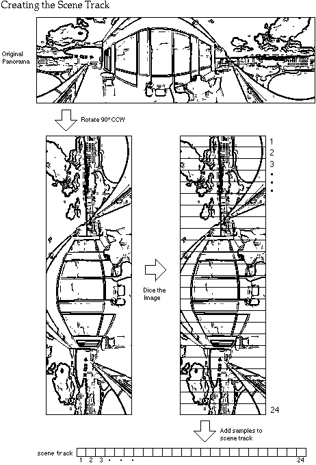
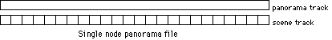
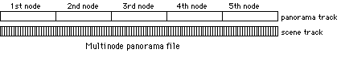
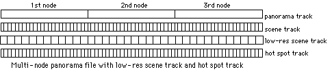

|
|
This Technote is intended to provide multimedia developers with the knowledge
necessary to create QuickTime VR 1.0 panorama movie files from their own
applications.
You should be thoroughly familiar with the QuickTime Movie Toolbox, as
documented in Inside Macintosh: QuickTime. In particular, knowledge of
the sections on creating a movie and working with media samples is essential
for making use of the information in this document.
|
Note:
Although this file format will be supported in future versions of
QuickTime VR, be aware that the panorama movie file format will change
significantly in the next release.
|
Updated: [Feb 1 1996]
|
About the Panorama Movie File Format
The simplest panoramic movie is a single node movie that contains one video
track and one panorama track. The video track, called the scene track in
QuickTime VR, is inactive and is used by the panorama track as an image store.
In a single node movie the panorama track contains one media sample. In a
multinode panorama, the panorama track contains one sample for each node in the
movie. Data in each sample contain information about the panoramic image for
the particular node. The scene track contains the panoramic image, usually
multiple samples comprising the diced frames of the panorama for a particular
node.
When the panorama needs to be imaged, the video samples are decompressed into
an offscreen buffer, reconstructing the original uncorrected panoramic image.
Based on the current pan, tilt, and zoom angle, a portion of the uncorrected
image is copied and partially corrected (1D correction) to another offscreen
buffer, whose size is the same as the display window. Then the contents of that
buffer are copied to the screen, going through the final correction phase (2D
correction). If circumstances (such as a non-rectangular clipped view) do not
allow writing directly to the screen, then a second offscreen correction buffer
is used and the image is then copied to the screen. If the imaging update mode
is set to partial or no correction, then the corresponding correction steps are
skipped.
Back to top
QuickTime VR Panorama Movie Authoring
To author a QuickTime VR panorama movie, you need to make extensive use of the
QuickTime Movie Toolbox, including such calls as CreateMovieFile,
NewMovieTrack, NewTrackMedia, AddMediaSample, InsertMediaIntoTrack, and many
other calls.
Two things to keep in mind:
- The QuickTime VR components must be registered when you are authoring a
QuickTime VR movie. If the components are not registered,
NewTrackMedia will
fail when you try to create media for the panorama track.
- QuickTime VR 1.0 requires that QuickTime 2.0 or greater be installed in your
system.
The Movie File
A QuickTime VR panorama movie file is a QuickTime movie file. The only
difference between a panorama movie file and a regular linear QuickTime movie
file is the type and usage of the tracks contained in the movie and the user
data attached to the movie. In particular, for the Macintosh, the file type
should be set to 'MooV', and on Windows the file extension should be .mov. The
file's creator type on the Macintosh should be 'vrod', which is the creator
type for the QTVRPlayer application.
Also, as with any QuickTime file that is intended to be played on both
platforms, a data fork version of the file should be created using the
FlattenMovie Movie Toolbox call with the flattenAddMovieToDataFork flag set.
Movie Controller User Data
When you create a new QuickTime VR panorama movie, you must add a special piece
of user data that identifies which movie controller to invoke for this movie.
The movie controller type for QuickTime VR 1.0 panorama movies is 'STpn'. This
user data is examined by the Movie Toolbox when NewMovieController is called.
The following lines of code add the appropriate user data to a new movie:
UserData uDat;
OSType controllerSubType = 'STpn';
uDat = GetMovieUserData(newMovie);
SetUserDataItem(uDat, &controllerSubType,
sizeof(controllerSubType), 'ctyp', 1);
|
The Scene and Hot Spot Tracks
The scene track contains the actual panoramic image for each node. It is a
standard QuickTime video track. The panoramic image itself may have been
created by the QuickTime VR stitcher tool, a graphics rendering application, or
directly from a panoramic camera. In order to process the panorama most
efficiently, QuickTime VR expects the panoramic image to be rotated 90deg.
counterclockwise. For disk access and memory efficiency, each full panorama is
usually diced into smaller frames. Each diced frame is compressed and added to
the scene track as a new video sample. You can choose to use any image
compressor you deem appropriate to the image; you must not, however, use
temporal compression (frame differencing).
You can optionally store a low-resolution version of the panoramic image in a
video track called the low-resolution scene track. If the low-resolution scene
track exists and there is not enough memory to use the normal scene track, then
QuickTime VR uses the low-resolution scene track. The low-resolution track
contains diced frames just like the higher resolution track, but the
reconstructed panoramic image is half the height and half the width of the
higher resolution version. The number of diced frames for the low-resolution
scene track is usually half that of the scene track.
The hot-spot track is another optional video track that contains a parallel
panorama, with colored regions corresponding to hot spots in the scene track's
panorama. The hot spot panoramic image must be 8 bits deep. Each diced frame of
the hot spot panoramic image must be compressed with a lossless compressor such
as QuickTime's Graphics compressor. The dimensions of the hot spot panoramic
image is usually the same as that of the scene track's panoramic image, but it
is not required. The dimensions must, however, have the same aspect ratio as
the scene track's panoramic image.
As with the scene track, the panoramic images corresponding to the low
resolution scene track and the hot spot track must be rotated 90deg.
counterclockwise.
The Panorama Track
The panorama track is a special type of QuickTime track specific to panorama
movies. Its media type is 'STpn'. The panorama media's media info data contains
general scene and node location information.
Each sample in the panorama track corresponds to one node in the scene.
Panorama track samples with similar characteristics share a sample description
of type PanoramaDescription. This data structure contains data that specifies
the track IDs of the scene and hot spot tracks. It also contains information
about how the panoramic image has been diced.
Each individual panorama track sample contains data about one node. This
includes default view angles, pan and zoom constraints, and hot spot
information.
The format of the media info, panorama description, and panorama samples are
described in the following sections. Figure 1 illustrates how a scene track is created.

Figure 1. Creating the Scene Track
|
Note:
In the following data structure descriptions, here are the sizes
of the standard Macintosh data types used:
|
Type bit size
long 32
unsigned long 32
short 16
unsigned short 16
Fixed 32
OSType 32
Str31 256
TimeValue 32
Rect 64
|
|
The structures all use Macintosh 68K alignment. To ensure Mac 68K alignment,
place this pragma statment in front of all data structures: |
#pragma options align = mac68k
|
The Media Info Data
For a multinode panorama, general scene and node location information is stored
in the panorama media handler's media info data structure, which is a chunk of
private data that QuickTime maintains for certain media handlers. You use the
MediaGetMediaInfo call to add the information to the panorama track's media.
Yes, that's Get, not Set. The call is named from the point of view of the media
handler.
MediaGetMediaInfo is defined in the header file MediaHandlers.h and documented
in the Derived Media Handler Components section of Inside Macintosh:
QuickTime Components, although again, it is documented from the point of
view of the media handler implementor. You pass a handle to the PanoMediaInfo
structure when you call MediaGetMediaInfo. QuickTime VR will make a copy of the
data. You are responsible for disposing of your copy of the handle.
struct PanoMediaInfo {
long size; // the size of the entire media info
OSType type; // must be 'pInf'
Str31 name; // the name of the scene
unsigned long defNodeID; // the node to display initially
Fixed defZoom; // the default zoom for all nodes
long reserved; // must be zero
short pad; // must be zero
short numEntries; // the number of nodes in the scene
IDTableEntry idToTime[1]; // table mapping node IDs to movie time
};
struct IDTableEntry {
unsigned long nodeID;
TimeValue time;
};
|
The idToTime field maps node IDs to the movie time of the panorama sample
corresponding to the node. The table must be sorted in ascending order by node
ID. The node IDs are used to identify a particular node and are used by the
link hot spots when determining which node to jump to.
The following code snippet adds the media info for a two node scene with node
IDs 6 and 9.
PanoMediaInfo **mediaInfoH;
long numNodes = 2;
mediaInfoH = (PanoMediaInfo **) NewHandleClear(sizeof(PanoMediaInfo)
+ (numNodes-1)*sizeof(IDTableEntry));
(*mediaInfoH )->size = GetHandleSize((Handle) mediaInfoH );
(*mediaInfoH )->type = 'pInf';
(*mediaInfoH )->defNodeID = 6;
(*mediaInfoH )->defZoom = 65L << 16;
(*mediaInfoH )->numEntries = numNodes;
(*mediaInfoH )->idToTime[0].nodeID = 6;
(*mediaInfoH )->idToTime[0].time = 0;
(*mediaInfoH )->idToTime[1].nodeID = 9;
(*mediaInfoH )->idToTime[1].time = 7200;
MediaGetMediaInfo(panoMediaHandler, (Handle)mediaInfoH);
// Yes, that's Get, not Set!
DisposeHandle((Handle) mediaInfoH);
|
The Panorama Track's Sample Description
The panorama track contains one sample for each node in the panorama. The
sample description for the panorama media contains information that is usually
shared by many nodes. Many of the fields are reserved and should be set to the
values indicated in the description that follows. Other fields indicate
information about the source panorama image, such as its size and how it was
diced. In the following description, typical values for a high resolution
panorama file are given.
struct PanoramaDescription {
long size; // total size of the PanoramaDescription
long type; // must be 'pano'
long reserved1; // must be zero
long reserved2; // must be zero
short majorVersion; // must be zero
short minorVersion; // must be zero
long sceneTrackID; // ID of video track that contains
panoramic scene
long loResSceneTrackID; // ID of video track that contains low
res panoramic scene
long reserved3[6]; // must be zero
long hotSpotTrackID; // ID of video track that contains
hotspot image
long reserved4[9]; // must be zero
Fixed hPanStart; // horizontal pan range start angle
(e.g. 0)
Fixed hPanEnd; // horizontal pan range end angle
(e.g. 360)
Fixed vPanTop; // vertical pan range top angle
(e.g. 42.5)
Fixed vPanBottom; // vertical pan range bottom angle
(e.g. -42.5)
Fixed minimumZoom; // minimum zoom angle (e.g. 5; use 0 for
default)
Fixed maximumZoom; // maximum zoom angle (e.g. 65; use 0
for default)
// Info for highest res version of scene track
long sceneSizeX; // pixel width of the panorama (e.g. 768)
long sceneSizeY; // pixel height of the panorama (e.g.
2496)
long numFrames; // number of diced frames (e.g. 24)
short reserved5; // must be zero
short sceneNumFramesX; // diced frames wide (e.g. 1)
short sceneNumFramesY; // diced frames high (e.g. 24)
short sceneColorDepth; // bit depth of the scene track (e.g. 32)
// Info for highest res version of hotSpot track
long hotSpotSizeX; // pixel width of the hot spot panorama
(e.g. 768)
long hotSpotSizeY; // pixel height of the hot spot panorama
(e.g. 2496)
short reserved6; // must be zero
short hotSpotNumFramesX; // diced frames wide (e.g. 1)
short hotSpotNumFramesY; // diced frames high (e.g. 24)
short hotSpotColorDepth; // must be 8
};
|
A value of 0 for a track ID indicates there is no corresponding track. The
sceneTrackID field must refer to a valid scene track. The low-resolution scene
track and hot spot track are optional. The pan and zoom range values are used
to indicate the extent of the panorama. A full wraparound panorama would have
hPanStart and hPanEnd values of 0 and 360 (shifted left 16 since they are Fixed
values). Partial panoramas will have different appropriate values. The vPanTop
and vPanBottom angles define the vertical field of view, where 0 is the
straight-ahead view angle.
|
Note:
hPan, vPan, and zoom angles will be called pan, tilt, and field of
view in future versions of QuickTime VR.
|
You can specify a minimum and maximum zoom angle, or use 0 to get QuickTime
VR's default. It's a good idea to specify a minimum zoom angle so that you can
prevent the user from zooming all the way until all you see is giant pixels.
The general rules that govern the size values are that the height and width of
the panorama should be set so that each can be divided into an even number of
whole diced frames. The dimensions of the diced frames should be divisible by
4. Since the panorama is stored rotated 90 degrees counterclockwise, the height is generally larger than the width.
The Panorama Track Samples
The samples in the panorama track contain information about the node, tables of
hot spot information, and a table of Pascal strings for storing names and
comments. The data in each sample is organized as atom data structures.
|
Note:
This file format pre-dates the QuickTime 2.1 Atom Data routines
and is not compatible with them.
|
Each atom has a header that consists of a 4-byte size followed by a 4-byte type
field. The atoms can appear in any order within the panorama sample data.
The panorama header atom (type 'pHdr') contains information about the node
itself, such as its node ID, the default viewing angles, and panning and
zooming constraints specific to this node. If there are no constraints specific
to this node, then 0 should be used for the min and max values. The
nameStrOffset and commentStrOffset fields (in this and other atoms) contain
offsets into the string table atom.
struct PanoSampleHeaderAtom {
long size;
OSType type; // must be 'pHdr'
unsigned long nodeID; // corresponds to a node ID in the
idToTime table above
Fixed defHPan; // default horizontal pan angle when
displaying this node
Fixed defVPan; // default vertical pan angle when
displaying this node
Fixed defZoom; // default zoom angle when displaying
this node
// constraints for this node; use zero for default
Fixed minHPan;
Fixed minVPan;
Fixed minZoom;
Fixed maxHPan;
Fixed maxVPan;
Fixed maxZoom;
long reserved1; // must be zero
long reserved2; // must be zero
long nameStrOffset; // offset into string table atom
long commentStrOffset; // offset into string table atom
};
|
The string table atom (type 'strT') is a table of Pascal strings concatenated
together. The offset value for a particular string gives the offset into the
table of the length byte of the string (with length number of characters
following). The offset value includes the size and type fields of the string
table atom; thus the first string in the table would be at offset 8. An offset
value of 0 indicates there is no string in the table for this item.
struct StringTableAtom {
long size;
OSType type; // must be 'strT'
char bunchOstrings[1]; // concatenated Pascal strings
};
|
The hot spot table atom lists all of the hot spots in the node. Each entry in
the table gives general information about the particular hot spot, such as the
hot spot ID and type ('link', 'navg', etc), its canonical or "best" viewing
position, bounding rectangle, and special cursor IDs. The hot spot ID
corresponds to the pixel value found in the hot spot track. The hot spot types
known by QuickTime VR are 'link' and 'navg'. For 'link' and 'navg' hot spots,
the typeData field is the ID of an entry in the 'link' or 'navg' tables. For
any other hot spot type, typeData is undefined. The cursor IDs are used to
override the default hot spot cursors provided by QuickTime VR. They are used
when the mouse moves over or is clicked on the particular hot spot. The cursor
IDs must be set to 0 if the default cursors are to be used.
struct HotSpotTableAtom {
long size;
OSType type; // must be 'pHot'
short pad; // must be zero
short numHotSpots;
HotSpot hotSpots[1];
};
struct HotSpot {
unsigned short hotSpotID; // the ID of this hot spot
short reserved1; // must be zero
OSType type; // the hot spot type (e.g. 'link',
'navg', etc)
unsigned long typeData; // for link and navg, the ID in the link
and navg table
// canonical view for this hot spot
Fixed viewHPan;
Fixed viewVPan;
Fixed viewZoom;
Rect hotSpotRect; // bounding rectangle of the hot spot in
the panorama
long mouseOverCursorID;
long mouseDownCursorID;
long mouseUpCursorID;
long reserved2; // must be zero
long nameStrOffset; // offset into string table atom
long commentStrOffset; // offset into string table atom
};
|
The link table atom is what QuickTime VR uses to automatically jump from node
to node when the user clicks on a link hot spot. The link table atom (type
'pLnk') lists all the links from this node to other nodes in the scene. Each link contains its link ID, which is the value referred to by the typeData field
in the link hot spot atom. A link also contains the destination node id as well
as the viewing angles to use at the new node. If the toZoom field is set to 0,
then the current zoom angle is maintained when jumping to the node.
struct LinkTableAtom {
long size;
OSType type; // must be 'pLnk'
short pad; // must be zero
short numLinks;
PanoLink links[1];
};
struct PanoLink {
unsigned short linkID; // ID referred to by the typeData
field in the hot spot atom
short reserved1; // must be zero
long reserved2; // must be zero
long reserved3; // must be zero
unsigned long toNodeID; // the node id of the destination
node
long reserved4[3]; // must be zero
Fixed toHPan; // horizontal pan angle to set at
the destination node
Fixed toVPan; // vertical pan angle to set at the
destination node
Fixed toZoom; // zoom angle to set at the
destination node
long reserved5; // must be zero
long reserved6; // must be zero
long nameStrOffset; // offset into string table atom
long commentStrOffset; // offset into string table atom
};
|
The 'navg' table atom stores information about navigable objects that may
appear in the scene.
|
Note:
Navigable Object movies are called simply Object movies in future
versions of QuickTime VR; the term "navigable" is going away.
|
QuickTime VR does not do any automatic linking to navigable object movies. The
'navg' table atom is stored here so that applications can extract the
information and use it to perform its own object movie transitions. Each entry
contains its object ID, which is the value referred to by the typeData field in
the 'navg' hot spot atom. It also stores information that can be used by the
Navigable Movie Controller. The navgHPan, navgVPan, and navgZoom fields specify
the orientation of the corresponding object movie that best represents the
orientation of the object as it appears in the panoramic scene. The zoomRect
field specifies a rectangle that can be used by the Navigable Movie Controller
as a starting point for a zoom-out transition effect. The zoomRect value is in
the coordinate system of the panorama. It is similar to the hotSpotRect field
in the hot spot atom, but generally is a bit larger, since it represents the
view of the object as seen in the object movie, rather than the tight bounding
rectangle represented by the hotSpotRect. Also, the zoomRect field value needs
to be converted to window coordinates (based on the current viewing angles)
before it is passed to the Navigable Movie Controller.
struct NavgTableAtom {
long size;
OSType type; // must be 'pNav'
short pad; // must be zero
short numObjects;
NavgObject objects[1]; // navigable objects
};
struct NavgObject {
unsigned short objID; // ID referred to by the typeData
field in the hot spot atom
short reserved1; // must be zero
long reserved2; // must be zero
// Info for Navigable Movie Controller
Fixed navgHPan; // the object's orientation in the
scene
Fixed navgVPan;
Fixed navgZoom;
Rect zoomRect; // starting rect for zoom out
transition
long reserved3; // must be zero
long nameStrOffset; // offset into string table atom
long commentStrOffset; // offset into string table atom
};
|
Track Layout
Each sample in the panorama track corresponds to one node in the scene. The
time base of the movie is used to locate the proper video samples in the scene
track for a particular node. The video sample for the first diced frame of a
node's panoramic image is located in the scene track at the same time as the
corresponding panorama sample. The duration of all of the video samples
together for one node is the same as the duration of the corresponding panorama
sample (Figures 2 & 3).
Figure 2. Single Node Panorama File

Figure 3. Multinode Panorama File
The video samples corresponding to the low-resolution scene track, if one
exists, are also located at the same time and total duration as the panorama
sample. Likewise, the hot spot track, if it exists, has its samples for a
particular node located at the same time and total duration as the panorama
sample. (Figure 4).

Figure 4. Multinode Panorama File with Low-Res Scene Track and Hot Spot Track
In a panorama movie file the scene track, low-resolution scene track, and hot
spot track are all disabled. Only the panorama track is enabled. The track
dimensions and track matrix of the panorama track determine the rectangle
returned by the GetMovieBox call.
Back to top
Summary
This Technote has shown how you can create a QuickTime VR panorama movie from a
set of panorama picts. Hotspots may be added to allow the user to jump between
panoramas, to pick QuickTime VR objects, or any user-defined hot spot
picking.
Authoring a multi-node panorama file with hot spots is a complex process. Make
sure you verify the resulting file using QTVRPlayer.
Back to top
References
Inside Macintosh: QuickTime
Inside Macintosh: QuickTime Components
Technote 1036, "QuickTime VR 1.0 Object Movie File Format"
Back to top
Downloadables
|

|
Acrobat version of this Note (488K).
|
Download
|
Back to top
|